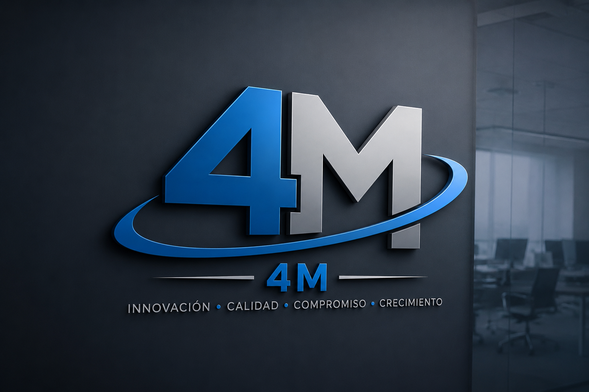

Una plataforma para administrar recursos de la empresa es un informático diseñado para integrar y gestionar de manera eficiente los procesos y recursos de una organización como las finanzas, el inventario, el talento humano, las compras, las ventas y la producción. Estas plataformas permiten centralizar la información en una sola base de datos, facilitando la toma de decisiones y mejorando la coordinación entre las diferentes áreas de la empresa.
Bienvenido a nuestro sitio web. Somos una empresa comprometida con ofrecer soluciones innovadoras y de calidad para satisfacer las necesidades de nuestros clientes. Nuestro objetivo es brindar productos y servicios confiables, apoyados en la tecnología y la mejora continua, garantizando una experiencia eficiente y profesional.
Somos una organización dedicada a ofrecer soluciones integrales que contribuyen al crecimiento y desarrollo de nuestros clientes. Contamos con un equipo de profesionales capacitados que trabaja con responsabilidad, compromiso y ética, buscando siempre la excelencia en cada uno de nuestros proyectos y servicios.

Ofrecemos una amplia variedad de productos y servicios diseñados para responder a las necesidades del mercado. Nos especializamos en brindar soluciones tecnológicas, asesoría, soporte y atención personalizada, garantizando calidad, innovación y satisfacción en cada uno de nuestros procesos.
Estamos disponibles para atender tus consultas, sugerencias o solicitudes de información. Puedes comunicarte con nosotros a través de nuestros canales de contacto, donde nuestro equipo estará dispuesto a brindarte una atención oportuna y personalizada. Será un placer ayudarte y resolver cualquier inquietud que tengas.
Email: contacto@empresa4M.com
Teléfono: +593 999 865 054